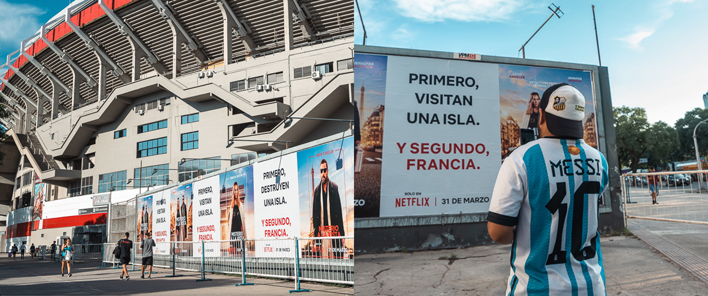
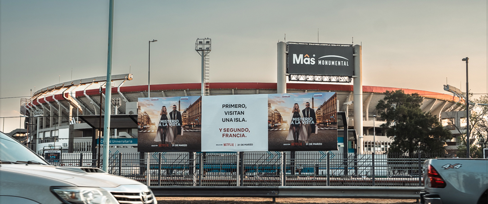

SEGUNDO,
FRANCIA
CONTEXTO
La misma semana que volvía a jugar de local la Scaloneta siendo campeona, estrenaba Murder Mystery 2 en Netflix. Una película que, más allá del resto de su argumento, tenía un dato llamativo: su primer destino era una isla,


🇫🇷 MERCI 🇫🇷
PREMIOS
🥇 Oro — Ojo de Iberoamérica // Eficacia
🥇 Oro — Diente // Vía Pública
🥈 Plata — +Digital // Mix de Medios
🥈 Plata — +Digital // Entretenimiento
🥉 Bronce — +Digital // Copy
🥉 Bronce — Lápiz // Medios
⭐️ Finalista — Effie Latam // Idea Qatar 2022
⭐️ Finalista — Ojo de Iberoamérica // Idea País
⭐️ Finalista — NY Festivals // Pushing Culture
⭐️ Finalista — NY Festivals // Outdoor
⭐️ Finalista — NY Festivals // Idea World Cup
⭐️ Finalista — NY Festivals // Community Engagement